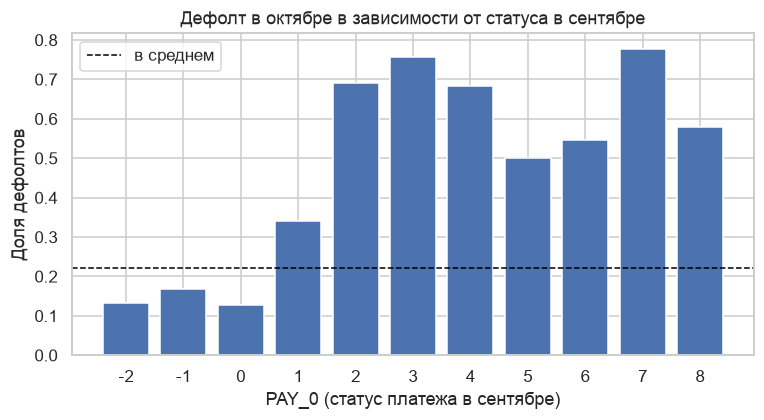
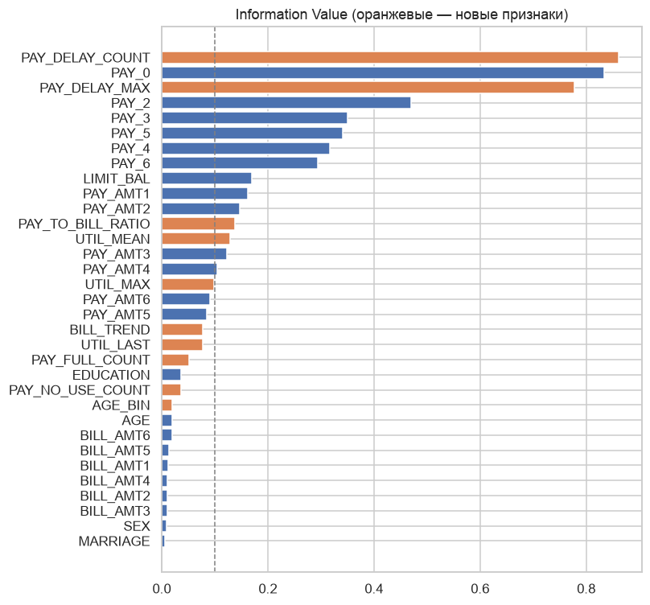
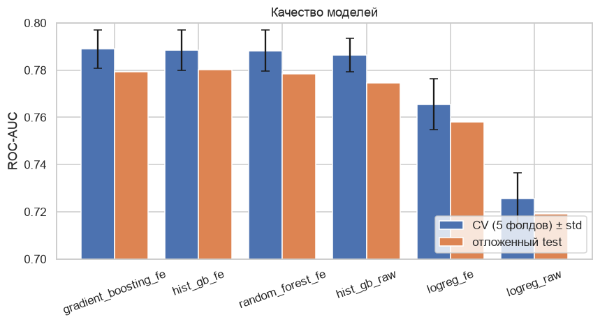
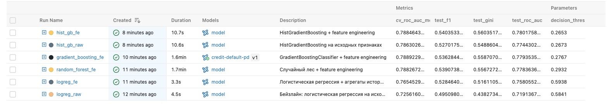
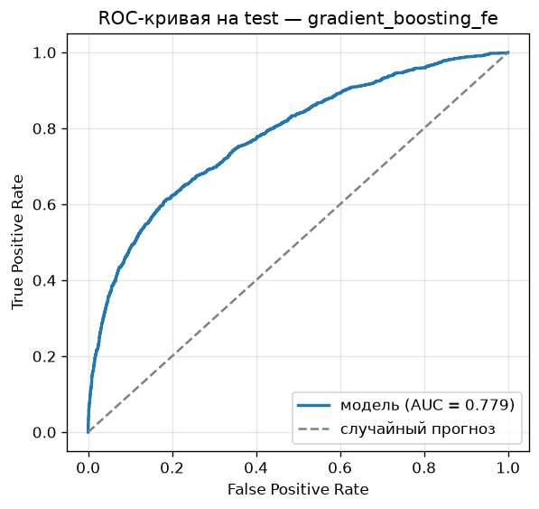
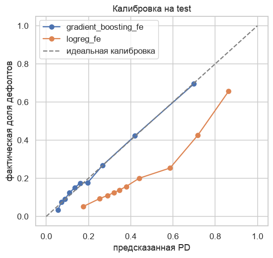
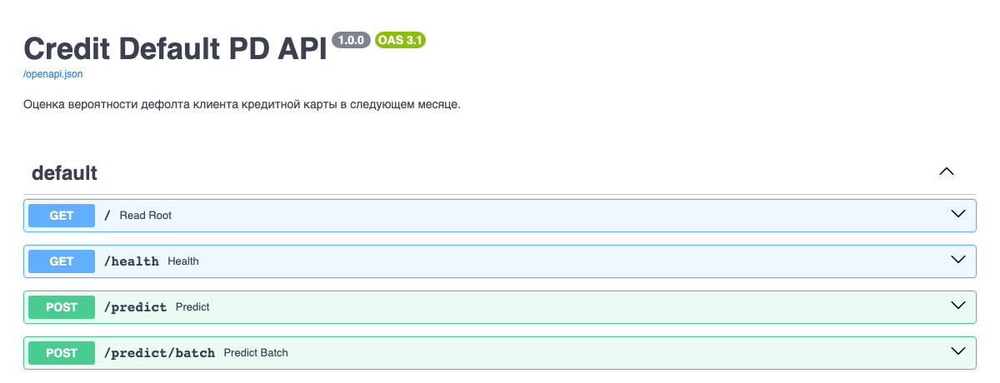
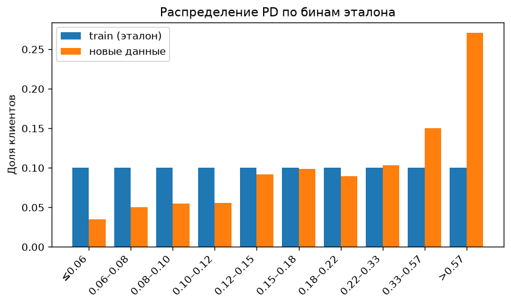

Итоговый проект · Автоматизация разработки и тестирования ML-моделей
Сквозная автоматизация: от проверки входящих данных до REST API в Docker и мониторинга дрифта
github.com/deepmindme/credit-pd-pipeline

dvc.yaml описывает стадии, данные и модели версионируются, remote — ветка
dvc-storage по HTTP/predict, /predict/batch, /health; лёгкий образ для инференса--fail-on-driftdvc status, сборка образа, smoke-тестГлавное решение: очистка категорий и feature engineering живут внутри sklearn Pipeline, поэтому API принимает исходные 23 поля, а train/serve skew исключён.
EDUCATION 0/5/6, MARRIAGE 0. В suite они разрешены, в модели сведены к «другое».PAY_x. Сырые суммы счетов почти бесполезны (IV ≈ 0.01).Great Expectations suite (78 правил):
CLI возвращает код 1 при нарушении. В тестах проверены 14 видов аномалий, и отдельный тест падает, если аномалии появятся в реальной выгрузке.
| Признак | Смысл |
|---|---|
PAY_DELAY_COUNT / MAX | месяцы с просрочкой, макс. просрочка |
PAY_NO_USE / FULL_COUNT | не пользовался / гасил полностью |
UTIL_LAST / MEAN / MAX | загрузка лимита |
BILL_TREND | рост долга за полгода |
PAY_TO_BILL_RATIO | платёж t к счёту t−1 |
AGE_BIN | U-образный риск по возрасту |
Новый PAY_DELAY_COUNT оказался самым информативным
признаком: IV 0.86 против 0.83 у PAY_0.

| Эксперимент | CV AUC | Test AUC | F1 | Время |
|---|---|---|---|---|
| logreg_raw | 0.726 | 0.719 | 0.495 | 2 с |
| logreg_fe | 0.766 | 0.758 | 0.529 | 1 с |
| random_forest_fe | 0.788 | 0.778 | 0.539 | 97 с |
| gradient_boosting_fe | 0.789 | 0.779 | 0.536 | 93 с |
| hist_gb_raw | 0.786 | 0.774 | 0.527 | 7 с |
| hist_gb_fe | 0.789 | 0.780 | 0.540 | 8 с |


cv_results.credit-default-pd с алиасом champion.

balanced завышает риск в 2–3 раза.$ dvc repro
validate → prepare → train → evaluate
$ dvc metrics show
reports/metrics.json roc_auc 0.7794 gini 0.5587
f1 0.5363 threshold 0.2767
dvc-storage по HTTP: dvc pull без ключей.params.yaml.GitHub Actions, на каждый push:
dvc pull → валидация GE → 81 тест pytest;dvc.lock соответствует коду, стадии воспроизводятся байт в байт;/predict, мониторинг PSI.$ ./scripts/docker_build_run.sh # сборка, запуск, проверка /health
$ curl -X POST localhost:8000/predict \
-H "Content-Type: application/json" \
-d @scripts/sample_request.json
{"default_prediction": 1,
"default_probability": 0.621562,
"threshold": 0.276678}

POST /predict: клиент → класс и PD.POST /predict/batch: до 1000 клиентов.GET /health: версия модели и порог.PAY_0 = 11 → 422.python:3.11-slim только с зависимостями инференса, без root, с HEALTHCHECK./health и /predict отвечают 503.| Сценарий | PSI скоров | Статус |
|---|---|---|
| baseline | 0.003 | stable |
| drift моложе, лимиты −40%, больше просрочек | 0.348 | significant |
В drift-сценарии сработали AGE, LIMIT_BAL,
PAY_0…PAY_6. В CI это гейт: код 2 при PSI ≥ 0.25.

Сделано
dvc repro.Что улучшить
hist_gb_fe: то же качество в 12 раз быстрее.